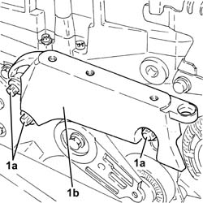
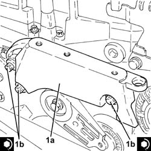
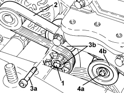
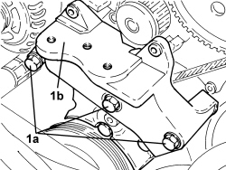
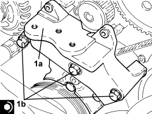
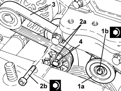
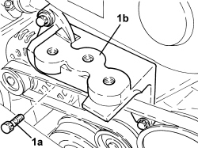

1008A46 POWER UNIT RIGID SUPPORT - TIMING SIDE - R.R.
- Path
- Procedures > 10 ENGINE > 1008 POWER UNIT SUPPORTS > 1008A POWER UNIT FASTENINGS > 1008A46 POWER UNIT RIGID SUPPORT - TIMING SIDE - R.R.
- Kind
- repair procedure (removal / refitting; the operation number is the code)
- Applies to
- all engines; all production periods
- Interactive page
- https://sloeber94.github.io/elrnDB-fCrm/en/#/194000234
Applies to: engines: 2.2; all production periods
 Removing
Removing
 Refitting
RefittingOp. 1048A10 AIR FILTER ASSEMBLY - R.R.
Op. 1008B10 POWER UNIT FRONT SUPPORT FLEXIBLE MOUNTING (TIMING SIDE) - REPLACE
- Raise the power unit as necessary using the hydraulic jack positioned for the removal of the flexible mounting.
1. Undo the bolts (1a) and remove the power unit rigid support (1b).

Applies to: engines: 2.2; all production periods
Refitting
Removing1. Place the power unit rigid support (1a) in its housing and secure it tightening the bolts (1b) to the recommended torque.
Component | Fastening | dia | Value (daNm) | Validity |
|---|---|---|---|---|
Timing side power unit rigid support | Bolt | M12 x 1.75 | (engine crankcase side) 7.5 - 8.5 | 2.2 |

Applies to: engines: 2.2; all production periods
- Place the power unit in its housing using the hydraulic jack.
Op. 1008B10 POWER UNIT FRONT SUPPORT FLEXIBLE MOUNTING (TIMING SIDE) - REPLACE
Applies to: engines: 1.9 JTD 8v, 1.9 JTD 16v; all production periods
Removing
Refitting- Make sure that the ignition key is in the OFF position, then disconnect the battery terminal (-).
Description | Connector | |
|---|---|---|
- | Battery |
Op. 1048A10 AIR FILTER ASSEMBLY - R.R.
Op. 7055B54 UNDER ENGINE PROTECTION/GUARD - R.R.
Op. 1008B10 POWER UNIT FRONT SUPPORT FLEXIBLE MOUNTING (TIMING SIDE) - REPLACE
1. Loosen the tension in the accessory drivebelt by adjusting the mobile tensioner with a wrench.
- Lock the mobile tensioner so that the belt is slack by inserting a suitable pin (5mm diameter).
2. Release and remove the auxiliary drivebelt.
3. Undo the bolt (3a) and remove the auxiliary driveshaft mobile tensioner (3b).
4. Undo the bolt (4a) and remove the engine components single belt fixed tensioner (4b).

Applies to: engines: 1.9 JTD 8v, 1.9 JTD 16v; all production periods
1. Undo the bolts (1a) and remove the protective timing cover (1b).

Applies to: engines: 1.9 JTD 8v, 1.9 JTD 16v; all production periods
1. Undo the bolts (1a) and remove the power unit timing side rigid support (1b).

Applies to: engines: 1.9 JTD 8v, 1.9 JTD 16v; all production periods
Refitting
Removing1. Place the power unit timing side rigid support (1a) in its housing and secure it tightening the bolts (1b) to the recommended torque.
Component | Fastening | dia | Value (daNm) | Validity |
|---|---|---|---|---|
Timing side power unit rigid support | Bolt | M10 | (engine crankcase side) 4.5 - 5.5 | 1.9 JTD 8v 1.9 JTD 16v |

Applies to: engines: 1.9 JTD 8v, 1.9 JTD 16v; all production periods
- Fit the timing belt covers and secure them using the bolts.
1. Position the auxiliary drivebelt fixed tensioner (1a) in its housing and secure it tightening the bolt (1b) to the recommended torque.
Component | Fastening | dia | Value (daNm) | Validity |
|---|---|---|---|---|
Engine components single belt fixed tensioner | Bolt | M10x1.5 | (engine crankcase side) 5.0 | 1.9 JTD 16v 1.9 JTD 8v |
2. Position the auxiliary drivebelt moving tensioner (2a) in its housing and secure it tightening the bolt (2b) to the recommended torque.
Component | Fastening | dia | Value (daNm) | Validity |
|---|---|---|---|---|
Engine components single belt moving tensioner | Bolt | M10x1.5 | 5.0 | 1.8 1.9 JTD 16v 1.9 JTD 8v 2.4 JTD 20v |
3. Fit the engine components single drive belt.
4. Adjust the mobile tensioner with a wrench until the pin can be withdrawn.

Applies to: engines: 1.9 JTD 8v, 1.9 JTD 16v; all production periods
Op. 1008B10 POWER UNIT FRONT SUPPORT FLEXIBLE MOUNTING (TIMING SIDE) - REPLACE
Op. 7055B54 UNDER ENGINE PROTECTION/GUARD - R.R.
Op. 1048A10 AIR FILTER ASSEMBLY - R.R.
- Connect the negative battery terminal.
Applies to: engines: 2.4 JTD 20v; all production periods
- On this version it is not possible to remove/refit the timing side power unit rigid support on the car.
To perform this operation, remove/refit the power unit
Op. 1004B14 POWER UNIT WITH AUTOMATIC TRANSMISSION R + R
and then work at the bench, customising the engine service procedures for this operation.
Applies to: engines: 1.8; all production periods
Removing
RefittingOp. 1008B10 POWER UNIT FRONT SUPPORT FLEXIBLE MOUNTING (TIMING SIDE) - REPLACE
1. Undo the bolts (1a) and remove the power unit rigid support (1b).

Applies to: engines: 1.8; all production periods
Refitting
Removing- Place the power unit rigid support in its housing and secure it by tightening the bolts to the recommended torque.
Component | Fastening | dia | Value (daNm) | Validity |
|---|---|---|---|---|
Timing side power unit rigid support | Bolt | M10 | 5.0 ÷ 6.0 | 1.8 |
Op. 1008B10 POWER UNIT FRONT SUPPORT FLEXIBLE MOUNTING (TIMING SIDE) - REPLACE
Topics linked from this page (5)
- 1004B14 POWER UNIT WITH AUTOMATIC TRANSMISSION R + R
- 1008B10 POWER UNIT FRONT SUPPORT FLEXIBLE MOUNTING (TIMING SIDE) - REPLACE
- 1048A10 AIR FILTER ASSEMBLY - R.R.
- 7055B54 UNDER ENGINE PROTECTION/GUARD - R.R.
- A001 BATTERY
Topics that link to this page (14)
- S018 FRONT SUSPENSION NOISE (KNOCKING)
- 1008B30 GEARBOX SIDE SUPPORT FLEXIBLE MOUNTING(S) - REPLACE
- 1016C10 SINGLE CYLINDER HEAD - R.R. AND REPLACE GASKET
- 1020D10 FRONT CRANKSHAFT OIL SEAL COVER - R + R AND REPLACE SEALS WITH TIMING BELT REMOVED
- 1028H20 PISTON WITH CONNECTING ROD - R.R
- 1032B10 TOOTHED TIMING BELT - R + R FOR TIMING ADJUSTMENT OR REPLACEMENT
- 1032D28 FRONT (INTERMEDIATE) TIMING PROTECTIVE COVER - R.R.
- 1032D31 PROTECTIVE TIMING INNER COVER - R.R. WITH TIMING BELT REMOVED
- 1036B10 OVERHEAD CAMSHAFT IN CYLINDER HEAD - R.R ON VEHICLE
- 1036C10 CAMSHAFTS IN CAMSHAFT HOUSING - R.R - INCLUDES CAMSHAFT HOUSING REPLACEMENT, IF NECESSARY
- 1036C30 CAMSHAFT FRONT OIL SEAL IN CYLINDER HEAD - REPLACEMENT WITH TIMING BELT REMOVED
- 1036H10 VALVE TAPPETS - CHECK AND ADJUST CLEARANCE, IF NECESSARY
- 1056B90 SYSTEM CABLE LOOM - R.R.
- 1072B10 INLET MANIFOLD - R + R AND REPLACE SEAL